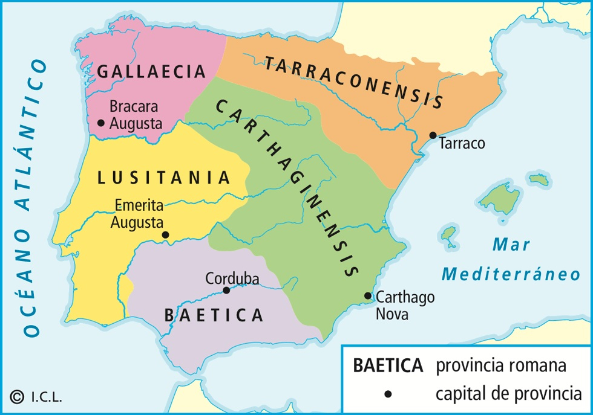
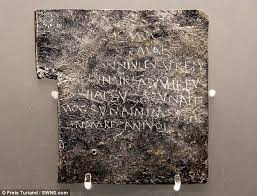

Interacciónes
Como un soldado romano, Aemilianus tuvo la oportunidad de viajar y conocer muchas
partes de Iberia. El latín que Aemilianus hubiera aprendido de sus padres evolucionómucho en
Iberia, y aquí veremos cuáles son algunas de las variaciones del latín vulgar que surgieron en
esta región.
Tabella defixionis: Una tableta de maldición
Vamos a imaginar que durante su carrera, Aemilianus conocióa otro soldado llamado Plotius, el cual se convirtióen su enemigo. Como era costumbre de los romanos, Aemilianus tomóuna tableta de plomo y sobre ella escribióuna petición a la diosa Proserpina, reina del infierno, rogándole que maldijera a Plotius. Esta tableta se enterróen tierra santa, y dentro del mes Plotius contrato la tifoidea y falleció, Aemilianus se convirtio en un devoto de Proserpina por toda la vida.
Aquí vemos una parte de la maldición de Aemilianus hacia Plotius (basado en esta tabla de Johns Hopkins) escrito primero en su latín original, después con unas de las variaciones del latín vulgar que se desarrollaron en Iberia durante este tiempo, y finalmente en español moderno. El texto completo de la maldición original en latín viene al final de la página.
Latín Original:
Proserpina Saluia do tibi nares, labra, oriculas, nasum, linguam, dentes Ploti, ni dicere possit Plotius quid sibi doleat; collum, umeros, bracchia, digitos, ni possit aliquit se adiutare: pectus, iocinera, cor, pulmones, ni possit sentire quit sibi doleat; intestina, uenter, umblicus, latera, ni possit dormire: scapulas, ni possit sanus dormire: uiscum sacrum, nei possit urinam facere: natis, anum, femina, genua, crura, tibias, pedes, talos, plantas, digitos, ungis, ni possit stare sua uirtute.
Latín Original:
Proserpina Saluia do tibi nares, labra, oriculas, nasum, linguam, dentes Ploti, ni dicere possit Plotius quid sibi doleat; collum, umeros, bracchia, digitos, ni possit aliquit se adiutare: pectus, iocinera, cor, pulmones, ni possit sentire quit sibi doleat; intestina, uenter, umblicus, latera, ni possit dormire: scapulas, ni possit sanus dormire: uiscum sacrum, nei possit urinam facere: natis, anum, femina, genua, crura, tibias, pedes, talos, plantas, digitos, ungis, ni possit stare sua uirtute.
Latín de Iberia:
Proserpina Salvia do tibi nares, labra, oriclas, nasum, linguam, dentes Yoti, ni dichere puede Yotsius quid si duela; colum, umros, braccha, dedos, ni puede algit se ajutare: pecho, iochinera, cor, pulmones, ni puede sentir que si duela; intestina, venter, ombligo, ladera, ni puede dormir: scapulas, ni puede sanus dormir: viscum sacrum, nei puede urina fachere: nalga, ano, hembra, rodilla, crura, tibias, pies, talones, llantas, dedos, uñas, ni puede estar su virtud.
Español moderno:
Perséfone Salvia, te doy los las fosas nasales, los labios, las orejas, la nariz, la lengua, y los dientes de Plotius, para que no puede decir la causa de su dolor; el cuello, los hombros, los brazos, y los dedos, para que no puede ayudarse de ninguna forma; su pecho, su hígado, su corazón, y sus pulmones, para que no puede descubrir porque le duele; sus intestinas, su estómago, su ombligo, y sus lados, para que no puede dormir; sus omoplatos, para que no puede descansar, su órgano sagrado, para que no puede orinar; su trasero, ano, muslos, rodillas, terneros, espinillas, pies, ankles, tobillos, dedos, y uñas, para que no puede pararse por su propia fuerza.

Texto completo de la tabla en latín
Bona pulcra Proserpina, Plutonis uxsor, seiue me Saluiam, deicere oportet, eripias
salutem, corpus, colorem, uires, uirtutes Ploti. Tradas Plutoni uiro tuo. Ni possit cogitati
sueis hoc uitare.
Tradas illunc febri quartanae, tertianae, cottidianae, quas cum illo luctent,
deluctent;illunc euincant, uincant, usque dum animam eius eripiant. Quare hanc uictimam tibi
trado, Proserpina, seiue me, Proserpina, seiue me Acheruos dicere oportet. Me mittas arcessitum
canem tricepitem, qui Ploti cor eripiat. Polliciar illi te daturum tres uictimas - palmas,
caricas, porcum nigrum - hoc sei perfecerit ante mensem Martium. Haec, Proserpina Saluia, tibi
dabo cum compote feceris. Do tibi caput Ploti Auoniae. Proserpina Saluia, do tibi frontem
Ploti.
Proserpina Saluia, do tibi supercilia Ploti. Proserpina Saluia, d
o tibi palpebras Ploti. Proserpina Saluia, do tibi pupillas Ploti. Proserpina Saluia do
tibi nares, labra, oriculas, nasum, linguam, dentes Ploti, ni dicere possit Plotius quid sibi
doleat; collum, umeros, bracchia, digitos, ni possit aliquit se adiutare: pectus, iocinera,
cor, pulmones, ni possit sentire quit sibi doleat; intestina, uenter, umblicus, latera, ni
possit dormire: scapulas, ni possit sanus dormire: uiscum sacrum, nei possit urinam facere:
natis, anum, femina, genua, crura, tibias, pedes, talos, plantas, digitos, ungis, ni possit
stare sua uirtute. Seiue plus, seiue paruum scriptum fuerit, quomodo quicquid legitime scripsit,
mandauit, seic ego Ploti tibi trado, mando, ut tradas, mandes mense Februario e cillunc.
Male perdat, male exset, male disperdat. Mandes, tradas, ni possit amplius ullum mensem
aspicere, uidere, contemplare.
